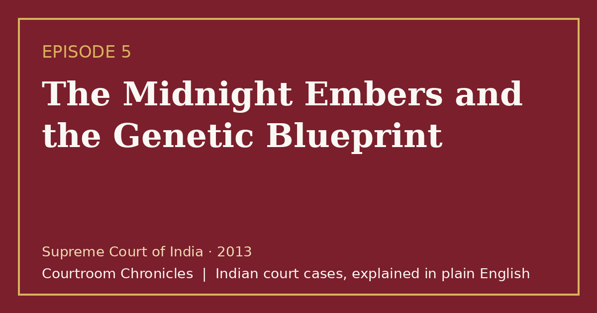

Episode 5 · 2026-10-08
The Midnight Embers and the Genetic Blueprint
When charred human remains are uncovered inside a hotel clay oven, pioneering DNA evidence and a second autopsy reconstruct an otherwise unidentifiable crime.

Listen
- Court
- Supreme Court of India
- Year
- 2013
- Legal Question
- Whether grotesque post-murder body disposal automatically mandates the death penalty
- Key Forensic Evidence
- DNA profiling of bone marrow and ballistic recovery of bullets during second autopsy
Key takeaways
- Advanced forensic science, including DNA profiling from charred bone marrow, provides conclusive legal identification even when visual recognition is impossible.
- A thorough second autopsy with radiological imaging can uncover vital ballistic evidence overlooked during initial medical inspections.
- Post-murder cruelty in disposing of remains does not automatically justify the death penalty if the underlying homicide lacks premeditated societal terror.
- Circumstantial evidence must form an unbroken chain pointing solely to the guilt of the accused and excluding every reasonable hypothesis of innocence.
The case in brief
Late on a July night, beat constables alerted by a street vendor investigated smoke billowing from the rear open-air restaurant of a capital hotel. Scaling the perimeter wall, the officers caught an employee actively stoking a commercial clay oven with wooden logs, claiming to burn political banners. When the flames were extinguished, investigators discovered a severely charred human torso whose limbs and facial features were completely incinerated.
A vehicle registered to the political leader who operated the restaurant was later found abandoned with blood traces, and the primary suspect absconded across multiple states before being arrested with a licensed firearm. Because the initial medical examination failed to identify the corpse or determine a precise cause of death, a board of medical examiners conducted a second post-mortem examination. Utilizing radiological imaging, examiners extracted two lead bullets from the victim's skull and neck, which ballistic testing matched directly to the seized firearm.
To establish identity beyond doubt, scientists performed pioneering forensic DNA profiling by extracting intact genetic material from deep bone marrow and matching it with blood samples from the victim's parents. This landmark forensic demonstration defeated the defense's claim that no identifiable body had been established. The trial court and high court convicted the accused and imposed capital punishment, relying on the gruesome manner in which the remains were burned.
The Supreme Court of India upheld the murder conviction but commuted the death sentence to life imprisonment. The bench emphasized that under the rarest of rare doctrine, the horror of post-murder conduct in concealing evidence cannot be substituted for premeditated extreme depravity against society. Concluding that the crime arose from strained domestic relationships without prior criminal history or societal threat, the court affirmed that the potential for prisoner reform precluded the death penalty.
Timeline
- The Midnight Discovery
Patrolling officers discover charred human remains burning inside a commercial clay oven at an open-air restaurant.
- Arrest and Weapon Seizure
The accused is arrested in another state, and a licensed revolver and ammunition are recovered from his possession.
- The Second Post-Mortem
A board of doctors uses radiological imaging to discover and extract two bullets lodged in the victim's skull.
- Pioneering DNA Identification
Forensic scientists match DNA extracted from charred bone marrow with blood samples from the victim's parents.
- The Trial Court Sentence
The trial court convicts the accused of murder and imposes capital punishment.
- The High Court Confirmation
The high court confirms the murder conviction and the death sentence.
- The Supreme Court Commutation
The Supreme Court of India upholds the murder conviction but commutes the death penalty to life imprisonment.
What the court decided
The Supreme Court of India affirmed the conviction for murder and destruction of evidence but commuted the death sentence to life imprisonment.
Key holdings
- DNA profiling constitutes reliable scientific evidence under expert opinion provisions to establish the identity of severely charred remains.
- The gruesome destruction of a body after death does not automatically elevate an offence to the rarest of rare category for capital punishment.
- In capital sentencing, courts must balance aggravating circumstances against mitigating factors, including the probability of offender rehabilitation.
- Circumstantial evidence consisting of forensic ballistics, DNA matching, and post-offence flight forms a complete chain establishing guilt beyond reasonable doubt.
Legal principles
The Rarest of Rare Doctrine
Capital punishment may only be imposed when the alternative option of life imprisonment is unquestionably foreclosed after weighing aggravating and mitigating factors.
In this case: The court held that although the destruction of the body was grotesque, the domestic nature of the dispute and the absence of prior criminal records meant life imprisonment was sufficient.
Corpus Delicti in Forensic Identification corpus delicti
The body of the crime; the requirement that the fact of death by criminal agency must be established before an accused can be convicted of murder.
In this case: The court relied on forensic DNA matching and ballistic extraction from skull bone to conclusively establish that the charred remains belonged to the victim.
Relevancy of Subsequent Conduct
Conduct of an accused immediately following an offence, including absconding and attempting to destroy evidence, is admissible to corroborate guilt.
In this case: The accused's immediate flight across multiple states and efforts to incinerate the body provided strong corroborative evidence under the statutory rules of conduct.
The law then and now
The incident occurred in July 1995, and the trial and appeals were conducted under the Indian Penal Code, 1860, the Code of Criminal Procedure, 1973, and the Indian Evidence Act, 1872. The new criminal codes (Bharatiya Nyaya Sanhita, Bharatiya Nagarik Suraksha Sanhita, and Bharatiya Sakshya Adhiniyam) took effect on 1 July 2024 and apply only to offences committed after that date.
Left: the law applied to this case. Right: the matching provision today (the new criminal codes apply only to offences on or after 1 July 2024).
Substantially unchanged; restructured under Chapter VI of the new penal code. See all 16 episodes on this provision →
Consolidated definition and punishment of criminal conspiracy into Section 61. See all 6 episodes on this provision →
Substantially unchanged; expert scientific opinions on DNA and ballistics are preserved under Section 39. See all 4 episodes on this provision →
Substantially unchanged doctrine of custodial discovery enacted as a proviso to Section 23. See all 4 episodes on this provision →
Sources
- Judgment of the Supreme Court of India, 2013
- Indian Penal Code, 1860 (High Court of Tripura Official Text)
- Bharatiya Nyaya Sanhita, 2023 and IPC Comparative Table (UP Police)
- Bharatiya Sakshya Adhiniyam, 2023 (High Court of Tripura Official Text)
- Bharatiya Sakshya Adhiniyam and Evidence Act Comparative Table (UP Police)
- Code of Criminal Procedure, 1973 (Official S3waas Text)